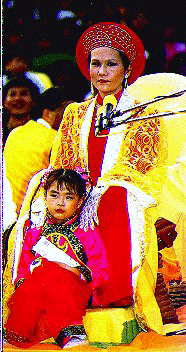

La manière d'améliorer une famille.
Prononcé par Suma Ching Hai au centre de Hsihu à Formose, le 8 octobre 1995 (Originellement en anglais)

Ce n'est pas avec des mots que nous aimons une personne. La plupart des gens expriment très bruyamment leur amour : « Aimer, aimer, aimer ! » Ça a l'air dégouttant. Si vous aimez vraiment une personne, elle le sentira sans vous voir, sans que vous ayez à le dire. Si vous n'avez pas l'obligation d'être un Maître ou que vous n'êtes pas chargés d'une grande mission qui vous demande de quitter la maison, vous devez prendre bien soin de votre famille, avoir de l'attention pour vos proches et amis et les influencer par l'amour. Le vrai amour ne s'exprime pas par des mots. Si vous aimez vraiment votre mari, vous devriez apprendre à bien cuisiner et à vous maquiller pour lui montrer votre beauté.
Quand j'étais mariée, je ne m'arrangeais pas pour aller travailler dans la journée. C'est vrai. Pour qui se parer dans la journée ? Même si le monde entier vous dévisage avec adoration, quel bénéfice en tirerez-vous ? Si votre mari ne daigne pas vous regarder, pouvez-vous le supporter ? Pendant la journée, il est nécessaire de protéger et de nourrir votre peau en mettant de la crème, etc. Le soir, lorsque votre mari rentre, vous pouvez allumer des bougies, mettre de beaux vêtements, et vous maquiller pour lui. C'est ainsi que vous devriez aimer votre mari, ce n'est pas en parlant.
Vous ne savez pas cuisiner, votre corps sent fort mais vous n'y prêtez pas attention, et vous vous habillez chaque jour comme le chef d'une bande de clochards ; mais vous vous attendez toujours à ce que votre mari vous aime. Comment le peut-il ? Il est humain aussi. Il a ses propres imperfections. Il a ses préférences, mais rien en vous ne peut le charmer. Vous le forcez à vous aimer quand même, mais même Dieu ne peut pas le forcer !
Je sais que cette sorte de situation est gênante pour le mari. Il voudrait aimer sa femme mais il ne peut pas. Il n'y a rien qui puisse la lui faire aimer.
C'est pourquoi, quand nous aimons une personne, nous devrions savoir ce qu'elle aime le plus et lui offrir ce qu'elle attend. C'est uniquement de cette manière que vous pouvez dire que vous l'aimez. Ce n'est pas en partant incessamment le jour et la nuit, sans prendre soin ni de vous-même ni de votre famille.
La maison n'a pas été rangée depuis deux ou trois mois. Le visage n'est pas lavé depuis deux mois. Vous portez des vêtements sales. Même si vous vous faites belle pour sortir, une fois rentrée chez vous, vous vous habillez comme une clocharde devant votre mari. C'est parce que vous ne comprenez pas l'essentiel.
Si vous consacrez beaucoup de pensées à votre mariage, il doit être heureux. Vous ne devez pas être aussi belle que Hsishi (une beauté vietnamienne d'antan.) Chaque fille a son propre charme. Si vous trouvez que vous n'êtes pas belle, vous pouvez apprendre à marcher comme une star de cinéma, à vous asseoir et à prendre soin de vous comme une beauté. Aujourd'hui vous pouvez apprendre cela dans les livres ou auprès d'un spécialiste. Il n'y a pas de raison pour qu'une femme ou un mari ne fassent pas bon ménage.
Je sais que ce n'est pas un sujet sur la pratique, mais souvent vous venez vers moi ou m'écrivez pour me demander comment résoudre les problèmes familiaux qui vous embêtent le plus. Je sais que si vous n'avez pas la paix au sein de votre famille, que vous ne trouvez pas le moyen de vous calmer, vous ne serez pas capables d'entrer en samadhi pendant la méditation. Le mariage est aussi lié à la pratique. C'est pourquoi on dit : « La voie de Bouddha ne peut pas être isolée de la voie mondaine. » Je ne peux pas refuser de répondre à vos questions sous prétexte que ce sont des affaires mondaines. Mais de toute façon vous n'appliquez pas ce que je vous dis. Vous dites : « Je comprends ! Je comprends ! J'ai vu plein de vidéos » Mais vous posez toujours les mêmes questions.
Le problème n'est pas que Maître ne vous répond pas, mais plutôt que vous n'appliquez pas ce que je dis. Si on vous prescrit un médicament et que vous ne le prenez pas, alors votre maladie ne sera pas guérie. Maître a parlé aussi bien aux maris qu'aux épouses ; mais il y a des petites choses que vous n'avez pas encore apprises, comme vous brosser les dents pendant 3-5 minutes. Si vous ne savez pas comment vous les brosser, demandez à votre dentiste. Vous devriez les brosser deux ou trois fois par jour ! Brossez, et rebrossez. Vos dents finiront bien par être propres. Aujourd'hui il existe toutes sortes de crèmes de beauté, de parfums, de savons, etc. contre les odeurs corporelles.
Vous devriez porter de beaux vêtements pour être jolies. Les vêtements ne doivent pas être nécessairement chers ; sinon vous ne serez pas en mesure d'en changer tous les jours. Vous pouvez les faire vous-mêmes ou les acheter à bas prix, avec des couleurs. Si vous êtes pleines d'entrain, vous serez belle dans n'importe quel vêtement. Ce n'est pas obligé qu'ils soient chers.
La plupart des vêtements que je porte sont fabriqués ici, très bon marché. J'achète juste un morceau de tissus, on peut en faire immédiatement une robe. Parfois je vais acheter des vêtements en soldes sur le bord de la route. La jupe colorée que je portais il y a deux semaines a été achetée à Taipei. Elle coûte moins de douze dollars taiwanais. Sa coupe est très simple. Vous avez tous dit que Maître était très belle, mais en réalité cela ne coûte pas cher.
N'achetez pas de vêtements trop chers ; sinon vous ne pourrez pas en changer souvent. Soyez plus sages. Ils sont soldés à certains endroits, mais ils sont très beaux. C'est bien s'ils vous vont. Si vous savez assortir les couleurs, vous serez plus jolies. C'est peu coûteux. Ne vous plaignez pas que votre mari ne vous donne pas assez d'argent pour que vous vous fassiez belle. Seulement une personne stupide donnerait de l'argent pour s'habiller dans les magasins. Nous devrions donner à nous-mêmes au lieu de donner aux patrons des boutiques de prêt à porter. (Le public rit)
C'est la même chose pour les hommes. Quand vous pratiquez, bien sûr vous devez porter des vêtements simples, confortables et amples, pour être à l'aise lorsque vous êtes assis. Mais quand vous revenez à la maison ou que vous sortez avec votre femme, vous devez bien vous habiller, vous arranger et vous faire beau. Accompagnée d'un bel homme, d'un joli garçon, la femme sera fière. Pensez-vous qu'elle aime sortir avec un clochard ? Vous voulez que votre femme soit belle et gentille, et vous alors ? Vous portez des joggings usés quand vous êtes assis dans l'ashram, et quand vous sortez avec votre femme, vous portez encore des vêtements dans ce style.
La pratique a ses principes. Sortir pour s'occuper des choses de ce monde a également ses principes. Les deux ne peuvent pas se mélanger. Ensuite vous vous plaignez auprès de moi : « C'est la pratique qui m'a fait devenir de la sorte. » Vous les gars, vous humiliez vraiment votre Maître. Vous ne savez pas quand il faut faire un pas en avant ou un pas en arrière. Vous ne connaissez pas la voie correcte. Vous ne savez pas comment se comporter par rapport aux situations. Vous ne savez pas comment vous y prendre dans une situation adaptée. Cela veut dire que vous n'avez pas de sagesse. Les disciples de Maître ne devraient pas être comme ça. Ne couvrez pas mon nom de honte. Si vous êtes ainsi, ne dites pas aux autres que vous êtes élève d "Maître Suprême Ching Hai Wu Shang Shih Suma Zhu". ( L'audience applaudit)
Il n'est pas très difficile d'obtenir quelque chose, mais il est difficile de le garder. Vous devez savoir ce que vous avez à faire. Vous devez payer le prix pour chaque chose. N'est-ce pas ainsi ? Si vous voulez avoir une Mercedes, vous devez payer un prêt pendant un certain temps. La Mercedes boit aussi de l'essence comme un poisson et vous devez payer de nombreuses assurances. Vous devez dépenser également beaucoup d'argent pour l'entretien de la voiture. Si vous voulez garder la Mercedes, vous devez payer le prix. Ou bien vous achetez une Yulong ou un autre modèle.
Vous devenez négligente après le mariage. Vous ne prenez pas soin de vous. Alors votre mari s'enfuit et vous venez me voir en pleurant. À quoi ça sert ? Vous devriez aller pleurer dans un salon de beauté, et on vous aidera à vous arranger. On vous coupera les cheveux, vous fera une permanente, vous étirera la peau, on vous coupera les paupières, remontera le nez et referont vos oreilles. Ces choses peuvent aider. Mais à quoi bon pleurer auprès de moi ? Même si je pouvais faire venir le vent et la pluie, je ne peux pas faire revenir votre mari. Parfois quand je vous vois, je voudrais aussi trouver une autre femme pour votre mari. Vous êtes dans un triste état, mais vous forcez sans cesse votre mari à vous aimer. Comment est-ce possible ?
Aujourd'hui, aussi bien la femme que l'homme doivent prendre soin d'eux-mêmes. Le corps doit être propre, il faut se baigner souvent, se brosser les dents et se rincer la bouche avec soin. Allez voir votre dentiste ou d'autres médecins régulièrement. Voyez ce qui doit être arrangé et arrangez-le. Vous devez être habillés proprement. Si vous êtes sales et portez des vêtements usés, votre mari ne voudra même pas regarder votre visage. Comment pourrait-il vous aimer ? Les filles à l'extérieur ne sont pas mariées. C'est pourquoi elles font attention à ce mettent de la poudre, du parfum, à prendre des bains, à se brosser les dents, à se rendre au salon de beauté, etc. Vous devez prendre soin de vous-mêmes, alors votre mari vous aimera. C'est la personne que vous étiez avant et c'est aussi la raison pour laquelle votre mari vous aimait, n'est-ce pas ?
C'est le problème psychologique de nous les êtres humains. C'est la même chose pour les hommes et les femmes. En avoir une n'est pas suffisant car une personne a seulement une qualité et elle est bonne uniquement dans un aspect. Par exemple, si elle sait cuisiner, alors elle ne fait pas bien le ménage, elle devrait savoir faire les deux -- cuisiner et s'occuper de la maison et elle devrait savoir faire les autres choses. Peut-être ne sait-elle pas se maquiller. Même sortir avec elle vous fait perdre la face et vous aimeriez la cacher quelque part. Lorsqu'elle parle avec les autres, ils ont envie de se pincer le nez, car elle exhale une odeur terrible. Parfois, lorsque le corps sent fort ou qu'il fait débraillé, c'est terrible. Et si en plus vous ne savez même pas cuisiner, alors "Au revoir !"
Nous ne pouvons pas forcer les autres à nous aimer si nous n'en sommes pas dignes. Si vous avez échoué à être un bon mari ou une bonne épouse, vous devez vous demander: « Pourquoi ai-je échoué ? Comment puis-je m'améliorer ? Est-ce que je peux réussir la prochaine fois ? Pourquoi je n'ai pas bien fait sur ce point ? » Si vraiment vous ne pouvez pas, alors laissez tomber. Si vous le pouvez, alors améliorez-vous ; étudiez assidûment jusqu'à ce que vous réussissiez. C'est aussi simple que ça ! Pourquoi votre mari aime une autre femme ? Il ne faut pas la détester. Il faut aller chez elle et apprendre tous les avantages qu'elle peut avoir. Si vous connaissez cette femme, apprenez ce qui a fait que votre mari ait de l'affection pour elle, et faites la même chose quand vous rentrez chez vous, ou faites mieux qu'elle. Alors votre mari ne voudra bien sûr plus vous quitter. C'est parce que notre mari ou notre femme nous aiment qu'ils se marient avec nous. Où est parti cet amour ? Il est impossible que l'amour ait complètement disparu. C'est nous qui n'avons pas pris soin du mariage, nous n'y avons pas prêté beaucoup d'attention, n'avons pas aimé le mari ou la femme, ou étions trop paresseux pour nous améliorer. Plus tard, nous nous rendons compte que c'était notre faute ; mais c'est trop tard.
C'est la même chose avec les choses de ce monde. Si nous voulons réussir nous devons travailler durement. Comprenez-vous ? Les choses de ce monde doivent être faites à la manière de ce monde plutôt que d'une manière spirituelle ; sinon c'est tirer un avantage inutile du pouvoir spirituel.
Lorsque j'étais en Afrique, j'ai connu un prince et des princesses. Ils m'ont dit que les membres de la famille royale devaient apprendre la sorcellerie et beaucoup de magie. Ils sont alors capables de savoir qui est mauvais, qui est bon etc. Ils peuvent utiliser la magie pour que vous les aimiez ou que vous les suiviez sans en avoir conscience. Y a-t-il un bénéfice d'utiliser le pouvoir magique ?
Il y a longtemps, quand les disciples commençaient juste de venir, je n'avais pas de temps pour les enseigner. Le mari d'une disciple l'a quitté et elle est venue auprès de moi en pleurant à chaudes larmes. Elle demandait que je lui enseigne la magie afin que son mari revienne et l'aime. Je lui ai dit : « Je ne possède pas cette magie-là. Même si je l'avais, je ne te la transmettrais pas. Je n'aime pas la magie noire mais j'ai beaucoup de connaissances dans la magie blanche. Veux-tu apprendre ? »
Elle dit : « Oui. »
J'ai dit : « Tu devrais parler plus doucement, te maquiller beaucoup mieux. À l'occasion tu porteras de nouveaux vêtements, mais pas nécessairement chers. Tu devrais de temps en temps changer d'humeur : Ne sois pas toujours douce, élégante ou obstinée chaque jour. Tu devrais changer de temps en temps en fonction de la situation. »
C'est parce que les hommes aiment différents genres de femmes et de particularités en elles. C'est la même chose pour nous les femmes. Nous ne pouvons pas seulement aimer chaque jour une seule et même caractéristique : morosité, sans un changement. Cela semble bien mais pas vraiment bon. Parfois ce n'est pas si mauvais d'être un peu mauvais. Changez !
La plupart des hommes aiment la variété. Si vous savez déjà cela et que vous voulez aussi garder votre mari, alors forcez-vous à changer. Sinon prenez quelques femmes chez vous pour votre mari. Que préférez-vous ? Si vous préférez avoir la paix dans la famille et garder votre mari à la maison, prenez quelques femmes pour lui parce qu'il aime la variété et des aspects différents pour des jours différents. Le mieux ce serait que vous puissiez jouer différents caractères pour répondre à ses besoins. C'est la même chose pour le mari. Alors la famille serait en paix et il n'y aurait pas besoin de venir à moi et de pleurer à chaudes larmes.
Vous avez tous du pouvoir magique. Soyez propre et sentez bon tous le temps. Rincez-vous la bouche et brossez-vous les dents avant de parler. Ne faites pas cela : Après avoir mangé de l'ail ou de l'oignon, vous allez le voir et lui dites : « Je t'aime ! » A ce moment-là, peu importe le romantisme ou les bougies que vous avez allumées, cela n'aidera pas. Ces petites choses peuvent l'effrayer. Cela m'effrayait dans le passé.
Si quelqu'''un sent très mauvais, je ne peux pas le supporter. J'ai envie de vomir et je ne peux parler avec lui de quoi que ce soit. Mon attention est détournée et je me dirais: « Pourquoi ne s'est-il pas lavé la bouche ? » Je continuerais de penser ainsi et mon esprit ne serait pas capable de se concentrer sur lui, mais penserait seulement à la manière d'échapper à cette ambiance : « Quand s'arrêtera-t-il de parler ? » ou « Comment puis-je le lui faire savoir ? » etc. Toute inspiration serait perdue.
Donc, ne le blâmez pas de ne pas vous aimer. Comment peut-il vous aimer ? Il n'a même pas suffisamment de temps pour essayer de vous fuir ! Si vous étiez à sa place cela ne vous plairait pas non plus.
Mais cela dépend aussi. Peut-être votre mari aime cette sorte d'odeur, alors gardez-la ! Vous devez clarifier cela avec lui !
Les gens de haut niveau n'aiment pas ces odeurs terribles. C'est pourquoi nous devons élever notre niveau, nous regarder nous-mêmes sans blâmer les autres. Dans le cas où quelqu''un ne nous aime pas ou que votre mari ou votre femme vous fuit, nous devons nous demander : « Pourquoi ? » Se demander vraiment et franchement quelles erreurs nous avons faites et si nous avons accompli ce que l'autre attendait de nous. Alors nous connaîtrions la raison. Il n'y a pas besoin de venir et de demander de la magie à Maître. Cela n'est pas utile ! Mais si je vous avais enseigné ce genre de magie - comme saisir le coeur de votre amant, contrôler son esprit, le faire rester auprès de vous, auriez-vous préféré cela ? Aimeriez-vous cette femme ou cet homme abruti obsédé par vous ? Il ne vous aimerait pas vraiment mais serait uniquement lié à vous et perdu en vous. Son esprit deviendrait confus. Il commencerait à aimer ce qu'il n'aimait pas dans le passé. C'est aussi une sorte de désordre mental. Aimeriez-vous cette femme ou ce mari anormal ? (Non, nous n'aimerions pas cela)
C'est pourquoi je vous dis que cette magie est inutile. Nous devrions convaincre les autres uniquement grâce à nos propres qualités, vertus et beauté intérieures. Extérieurement nous nous respectons ce qui serait agréable pour les yeux des autres ; votre voix devrait faire fondre le coeur de n'importe quelle personne qui vous écoute ; ou votre comportement, vos actions et la manière avec laquelle nous traitons les autres devraient les toucher. Ce genre d'amour sera plus durable, au lieu d'avoir recours à la magie si facilement.
Je sais que les problèmes familiaux vous troublent le plus, n'est-ce pas ? (Le public : Oui !) Parfois cela nous fait nous sentir mal. Je le sais. Par exemple vous êtes des gens très loyaux. Spécialement, après l'initiation, vous voulez suivre les instructions de Maître et vous voulez sincèrement prendre soin de votre famille, en aimant votre femme ou votre mari. Mais parfois vous ne pouvez pas le supporter, vous vous sentez mal, vous luttez et vous vous sentez coupables. Je sais que ce sont des choses qui vous troublent le plus. Mais certaines femmes stagnent et refusent de s'améliorer. Elles ne prennent pas soin d'elles, ne prêtent pas attention si leur mari les aime ou pas, si elles sont attirantes ou non, si elles sont pleines d'entrain. Elles ne font pas savoir à leur mari qu'elles le respectent et tiennent à son opinion. Elles ne font même pas attention si leur mari les aime ou pas. Tous les deux, mari et femme, sont plantés là. Le mari aussi bien que la femme sont comme ça. Tous les deux s'accusent l'un l'autre et se rabaissent. L'un dépérit, l'autre dépérit davantage. Aucun ne prend soin de l'autre. Alors cela devient de pire en pire jusqu'à ce qu'aucun ne veuille regarder l'autre et renvoie finalement les préceptes à Maître en disant : « Je me sens vraiment mal. Je suis désolé mais en tout cas je dois trouver quelqu''un d'autre. » Parfois c'est inutile de trouver quelqu''un d'autre. Changer pour quelqu''un d'autre ne veut pas dire que les choses deviendront meilleures. Plus tard ce sera la même chose. Vous vous mariez à une autre femme et elle dépérira aussi bien que la précédente, exactement de la même façon.
Après le mariage, peu de personnes essayent de préserver le mariage - se respecter l'un l'autre comme un hôte, ou prêter attention à son comportement et ses manières, aussi bien qu'aux vertus intérieures et à l'attirance. Beaucoup de gens qui se contrarient l'un l'autre, restent là et deviennent de pire en pire. La vie ne peut pas être belle comme ça. Si vous voulez être moines, vous pouvez venir ici et dépérir ensemble, il n'y a pas de problème. Mais si vous voulez vivre dans la société, vous devez essayer de protéger votre famille - vous offrir l'un à l'autre une joyeuse atmosphère et rendre la vie heureuse. Lorsque vous êtes chez vous, vous devriez prendre soin de vous et de votre mari ou de votre femme. Parfois le mari devrait lui rappeler, lui demander : « Pourquoi ne t'es-tu pas peignée dernièrement ? » Demandez-lui : « Depuis quand n'as-tu pas pris ton dernier bain ? » Dites-le avec humour. Rappelez-vous l'un à l'autre et respectez-vous mutuellement.
Si nous perdons notre esprit, le mariage sera sûrement perdu. Les deux parties ne peuvent se séduire. Si nous-mêmes n'avons pas envie de vivre, comment l'autre peut-il nous aimer ? Nous n'avons pas de courage intérieur, nous ne voulons pas lutter : nous ne sommes pas heureux à l'intérieur et ne prêtons attention à rien. Si vous ne prenez pas soin de vous-même, qui d'autre prendra soin de vous ? Votre mari est un être humain aussi, et non pas un bout de bois. Tous les êtres humains aiment la Vérité, la Vertu et la Beauté. Si quelque chose est beau, c'est certain qu'il aimera le regarder. Mais si quelqu''un à la maison est déplaisant, bien sûr il regardera autre part. C'est aussi ce que je ferais. Ensuite vous vous blâmez l'un l'autre. Cela n'est pas bien !
Nous devons tout d'abord nous examiner. Si vous ne savez pas cuisiner, suivez une recette ! La vie est très chargée pour certaines, c'est vrai. Mais certaines ne sont pas tellement occupées. Le mari va gagner de l'argent et vous restez à la maison. Vous pouvez prendre un peu de temps chaque année pour apprendre quelque chose. Vous pouvez vous dire dans ces trois mois je dois apprendre à cuisiner. Même si vous n'y connaissez rien, vous saurez après avoir appris ! Je suis sûre que cela marchera. Je le garantis ! Il y a beaucoup d'endroits où l'on enseigne aux gens comment préparer des plats végétariens. Même si vous cuisinez des plats avec de la viande, vous avez encore à apprendre. Ceux qui ne veulent pas suivre l'enseignement de Maître et qui ne sont pas des pratiquants auront encore à apprendre s'ils veulent cuisiner des plats avec de la viande pour leur mari. Même si l'on ne vous a jamais enseigné à cuisiner quand vous étiez jeunes, comment pouvez-vous le savoir automatiquement ?
Une fois que vous aurez appris à cuisiner, vous pourrez ensuite apprendre à faire des vêtements, à danser, etc. Il ne suffit pas de pratiquer tous les jours les jambes croisées, vous devriez également accompagner votre mari dans ses loisirs. Que se passe-t-il après être devenu un Bouddha ? - N'y a-t-il pas encore des choses à faire ? La vie continue, n'est-ce pas ?
C'est pourquoi la vie a besoin de variétés et de vitalité. Sinon vous pouvez construire une cave, vous y enfermer et mourir ! Si vous voulez mourir, mourez définitivement. Si vous voulez vivre, vivez avec entrain, d'une façon intéressante et significative, car nous devons également donner l'exemple aux autres. Sinon, tout le monde pensera qu'après avoir étudié avec "Ching Hai Wu Shang Shih Suprême Suma Ching Hai Zhu", on devient bon à rien et même pire qu'avant - vêtu comme le chef d'une bande de clochards.
Après avoir mangé ce que vous avez cuisiné, il reconsidère même de s'enfuir pour étudier à l'étranger. Ou vous êtes incapable de dire une phrase correcte. "Je ne veux pas parler." Mais vous devez parler ! Pensez-vous que j'aime venir chaque dimanche pour parler ? Mais si j'ai un travail à faire, je le fais bien. Je dois lire et faire des recherches. Parfois, ce que je lis n'est pas utilisé. Ça ne fait rien. Parfois, je me sers d'un livre ou d'une histoire, et cela apporte des exemples ou renforce le sens d'autres histoires. En se référant à l'histoire et aux exemples, vous pouvez comprendre immédiatement de quoi je parle.
Bien que ce monde ne soit en aucune façon permanent, Dieu nous a accordé cette vie et ce corps. Cela veut dire qu'Il voulait que l'on en fasse quelque chose. Il nous a donné un mari ou une femme, donc Il veut que l'on prenne soin d'eux, que l'on coopère, que l'on vive et apprenne ensemble, que l'on se respecte l'un l'autre, que l'on apprenne à être courtois dans la vie. Donc nous devons le faire bien. Si vous ne pouvez même pas vous occuper d'un mari ou une femme, que pouvez-vous faire d'autre ? Vous présenter à la présidence ? Trop de gens s'y présentent. Vous n'avez pas à essayer. Vous ne seriez pas capables de vous y faufiler. Vous n'avez pas beaucoup de chances. Les pratiquants comme vous savent seulement croiser les jambes. C'est très laid d'être assis les jambes croisées au bureau présidentiel. Quand les affaires d'état vous attendent, vous dites : « Je n'ai pas encore fini mes deux heures et demie de méditation. » Je vous ai dit que c'est bien d'être candidat aux élections présidentielles ou au bureau, mais vous devez le faire bien. Si vous ne savez pas vous occuper des petites choses, vous ne serez pas capables de gérer de grandes tâches.
 Retourner au menu principal
Joyau intérieur ne se ternira jamais
Beaucoup de gens peuvent peindre, mais la difficulté est
d'amener le chef d'oeuvre à la vie. Les couleurs devraient
s'assortir, belles, créant une atmosphère d'harmonie. Elles
devront être proches de la réalité, pour que l'objet original
soit reconnaissable, et en même temps unique. Si vous placez
les iris près du tableau et regardez attentivement alors, vous
pouvez voir la différence. Les fleurs du Maître sont plus
belles. Vous pouvez dire qu'elles sont pareilles mais ne se
ressemblent pas exactement. Ceci révèle le génie du Maître. Si
vous voulez une ressemblance parfaite la photographie peut être
plus pratique et plus réelle. Les fleurs dans ce tableau so
vivifiantes et ont l'air vraies comme si elles viennet d'être
cueillies. Cependant, vous ne pourrez pas acheter de pareils
iris comme ceux-ci.
Retourner au menu principal
Joyau intérieur ne se ternira jamais
Beaucoup de gens peuvent peindre, mais la difficulté est
d'amener le chef d'oeuvre à la vie. Les couleurs devraient
s'assortir, belles, créant une atmosphère d'harmonie. Elles
devront être proches de la réalité, pour que l'objet original
soit reconnaissable, et en même temps unique. Si vous placez
les iris près du tableau et regardez attentivement alors, vous
pouvez voir la différence. Les fleurs du Maître sont plus
belles. Vous pouvez dire qu'elles sont pareilles mais ne se
ressemblent pas exactement. Ceci révèle le génie du Maître. Si
vous voulez une ressemblance parfaite la photographie peut être
plus pratique et plus réelle. Les fleurs dans ce tableau so
vivifiantes et ont l'air vraies comme si elles viennet d'être
cueillies. Cependant, vous ne pourrez pas acheter de pareils
iris comme ceux-ci.